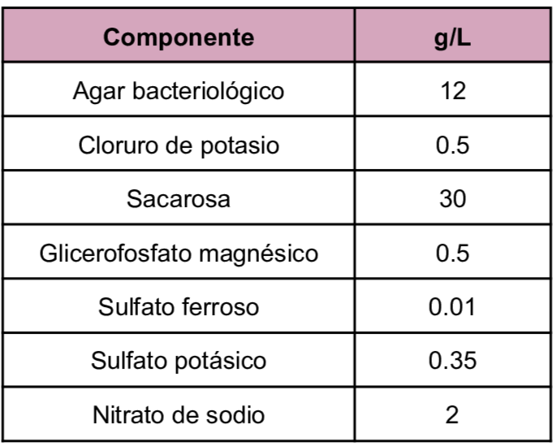
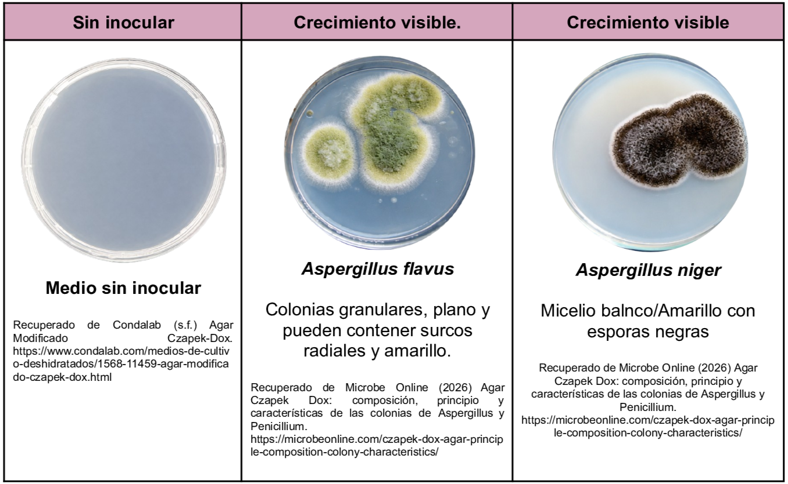

Utilizado para el cultivo de hongos de los géneros
Aspergillus, Penicillium
y la formación de clamidosporas de
C. albicans.
Se trata de un medio semisintético que posee nitrato de sodio como única fuente de nitrógeno dentro de su composición la sacarosa es el carbohidrato fermentable por otro lado el glicerofosfato de magnesio y el sulfato ferroso como fuentes de cationes.
Composición

pH a 25°C 6.7±0.2
Resultados Posibles
Se puede esperar un crecimiento variado dependiendo del hongo inoculado:
- Aspergillus fumigatus: Colonias azul grisáceas- verde grisáceo
- Aspergillus flavus: Colonias de amarillo verdoso a verde oliva
- Aspergillus niger: Colonias de negro a marrón oscuro
- Aspergillus terreus: Colonias marrón canela
- Penicillium spp: Colonias azul verdoso polvoriento
- Paecilomyces spp: Colonias de color tostado a oliva

Referencias
Condalab (2019) Agar Modificado Czapek.Dox. https://amyd.quimica.unam.mx/pluginfile.php/9878/mod_folder/content/0/Agar%20Czapek.pdf?forcedownload=1
Microbe Online (2026) Agar Czapek Dox: composición, principio y características de las colonias de Aspergillus y Penicillium. https://microbeonline.com/czapek-dox-agar-principle-composition-colony-characteristics/